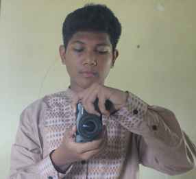

perkenalan
hai nama saya andra nama panjang saya saya muhammad nayaka raviandra biasa di panggil Andra atau nayaka biasanya di sekolah panggilan saya nayaka
saya dari kelas kelas 9
hobi
hobi saya adalah olahraga dan mengambil gambar yang ada di atas langit seperti awan,bulan,bintang
tujuan membuat web
tujuan saya mebuat web ini untuk belajar coding dasar untuk meningkat kan skill saya dalam programming